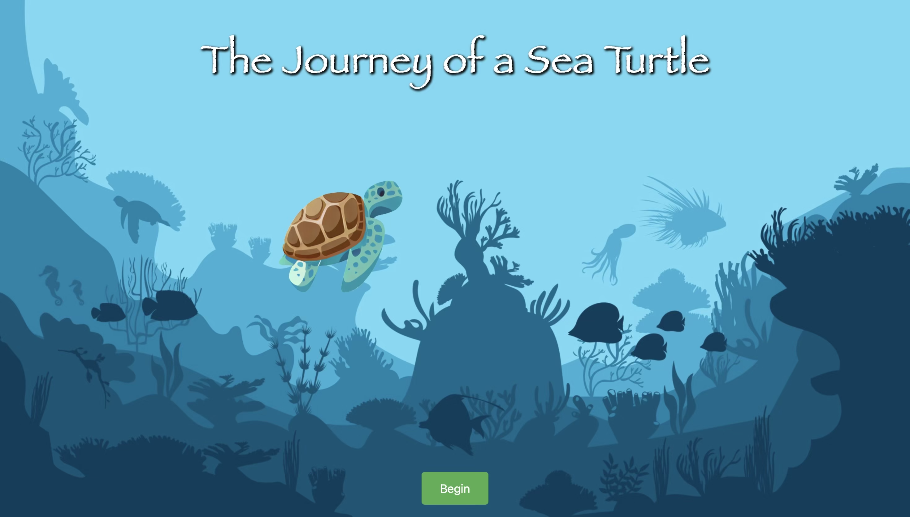

Bio
Hello! I’m Elaine Skiadas—a multidisciplinary artist, photographer, and writer with a background in visual storytelling and experiential design. I began my creative career in the culinary arts, specializing in food photography and recipe development. What started as an exploration of light, texture, and composition on the plate evolved into a broader artistic practice that now includes painting, woodworking, multimedia installation, and interactive digital art.
Journey of a Sea Turtle
This interactive game immerses players in the perilous journey that sea turtles face from hatchling to adulthood. Using arrow key controls, players must navigate a series of obstacles and avoid natural predators such as seagulls, crabs, and sharks—mirroring the real-world threats young turtles encounter on the beach and in the ocean. Educational snippets are woven throughout the game to highlight key facts and raise awareness about sea turtle conservation.
Press Fit Lantern
This piece marked my introduction to both laser cutting and woodworking. I've always been drawn to the soft, ambient glow that lamps bring to an indoor space, and I wanted to design something that felt both warm and organic. The laser-cut pattern on each press-fit component was inspired by the natural geometry of succulents.

Gallery
Commercial Food Photography